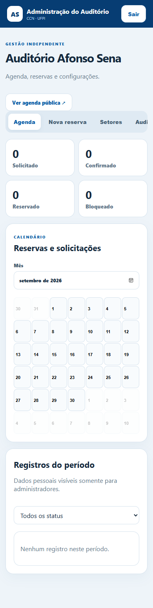

Auditório
Afonso Sena
Disponibilidade pública, solicitação de eventos e administração de reservas em uma jornada simples e transparente.
03O espaço certo, no horário certo.
Uma agenda digital para reduzir conflitos, padronizar solicitações e manter a administração informada sem expor dados privados.
Abrir projeto funcionandoDemonstração interativa. Reservas e configurações funcionam localmente no navegador; e-mails reais exigem servidor.
DEMONSTRAÇÃO INTERATIVA
Abrir em tela cheia ↗Consulte e reserve.
Navegue pela agenda, preencha uma solicitação e teste o fluxo de administração.


